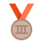
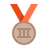

Vôlei
O vôlei é um esporte dinâmico e emocionante que cativa jogadores e fãs ao redor do mundo. Com sua quadra de 18 metros e rede no meio, o jogo se desenrola em rápidas trocas de bola, ataques poderosos e defesas acrobáticas. A habilidade, a estratégia e o trabalho em equipe são fundamentais para alcançar a vitória. O vôlei une competição e camaradagem, proporcionando uma experiência única para aqueles que o praticam.
O vôlei é um esporte que combina força, agilidade e habilidade técnica. Os jogadores saltam alto no ar para bloquear os ataques do adversário, enquanto os levantadores precisam ter precisão e visão de jogo para distribuir os passes de forma eficiente. Os ataques, com poderosos cortes e cortadas, surpreendem a defesa adversária. O vôlei é um jogo de estratégia, onde cada jogador desempenha um papel crucial para alcançar a vitória.
Posições do vôlei
Levantador: O levantador é responsável por montar as jogadas ofensivas da equipe. Ele recebe o primeiro toque após a recepção do saque e direciona a bola para os atacantes, visando criar oportunidades de ataque efetivas.
Oposto: O oposto é o atacante principal da equipe e geralmente fica posicionado do lado oposto ao levantador. Sua função é atacar na posição 2, oposta ao levantador, e contribuir com pontos fortes no ataque.
Ponteiro (também conhecido como Atacante de Ponta): Existem dois ponteiros, um na posição 4 e outro na posição 2, posicionados ao redor do levantador. Eles são responsáveis por receber os levantamentos e atacar nas extremidades da rede, além de contribuir na defesa e no bloqueio.
Central (ou Meio de Rede): Há dois centrais, posicionados na frente do levantador. Eles são especialistas em bloqueio e ataque rápido pelo meio da rede. Os centrais têm papel importante tanto na defesa quanto no bloqueio, além de serem alvos frequentes para os levantadores.
Líbero: O líbero é um jogador especializado em defesa e recepção. Ele substitui um jogador de fundo e não pode realizar ataques ou bloqueios acima da altura da rede. O líbero é responsável por receber os saques e defender os ataques do adversário, sendo uma peça fundamental na estabilidade defensiva da equipe.